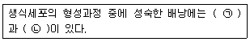

종자기능사 (2015-01-25 기출문제)
1과목: 종자(임의구분)
1. 지하발아형 종자가 아닌 것은?
- 콩
- 완두
- 보리
- 옥수수
(정답률: 70%)

2. 종자의 습윤저온층적(濕潤低溫層積) 저장 설명으로 가장 적합한 것은?
- 습한 자루에 3∼6 ℃에서 1∼2주 처리
- 습한 모래에 1∼10 ℃에서 3∼4주 처리
- 습한 진흙에 2∼9 ℃에서 2∼3주 처리
- 습한 짚 속에 6∼10 ℃에서 1∼2주 처리
(정답률: 87%)
3. 옥수수 복교잡종의 특징이 아닌 것은?
- 종자값이 저렴하다.
- 여러 환경조건에 대한 완충능력이 있다.
- 개화기간이 길어 다른 교잡종보다 수분기회가 많아 이삭이 충실해진다.
- 불량 환경조건일 때 종자의 균일도가 단교잡종이나 삼원교잡종 종자보다 낮다.
(정답률: 56%)
4. 완두 종자를 AㆍB 창고에 보관한 후 전기전도도 조사를 실시한 결과, A창고에 보관한 완 두 종자의 침출액이 더 많았다. 종자퇴화는 어느 것이 더 진전되었는가?
- A창고 완두 종자가 더 퇴화되었다.
- B창고 완두 종자가 더 퇴화되었다.
- A창고와 B창고 완두 종자의 퇴화는 똑같다.
- 비교할 수 없다.
(정답률: 84%)
5. 우량종자를 생산하는 방법으로 잘못된 것은?
- 격리재배를 통하여 이종의 혼입을 막는다.
- 무병지에서 채종한다.
- 감자의 바이러스 병을 막기 위해 평지에서 채종한다.
- 벼 종자는 평야지보다 분지에서 생산된 것이 임실이 좋아서 종자가치가 높다.
(정답률: 78%)
6. 종자의 유전적인 퇴화를 가장 효과적으로 방지할 수 있는 방법은?
- 격리재배
- 생육기 조절
- 충실한 종자 선택
- 종자소독 철저
(정답률: 63%)
7. 일반 식물 종자의 발아를 위한 최고온도 범위로 가장 적당한 것은?
- 15∼20 ℃
- 25∼30 ℃
- 30∼40 ℃
- 45∼50 ℃
(정답률: 48%)
8. 종자세검사법(種子勢檢査法)으로 갖추어야 할 요건과 거리가 먼 것은?
- 신속해야 한다.
- 객관성이 있어야 한다.
- 첨단장비를 갖추어야 한다.
- 경비가 적게 들어야 한다.
(정답률: 82%)
9. 광발아 종자의 발아를 촉진시키는 가장 효과적인 빛의 파장은?
- 적색광
- 청색광
- 자외선
- 황색광
(정답률: 80%)
10. 종자 병해 검사 방법으로 부적합한 것은?
- 종자를 살균한 후 조사한다.
- 400립 이상의 종자를 취해 검사한다.
- 병원균이 자라도록 배양한 후에 조사한다.
- 파종 후 생육 중인 식물체를 검사한다.
(정답률: 70%)
11. 종자를 안전하게 저장 관리하는 방법으로 틀린 것은?
- 이병개체의 선별 및 제거
- 해충의 구제
- 저장 온ㆍ습도의 큰 변화
- 쥐 피해의 방지
(정답률: 80%)
12. 피자식물의 배와 배유에 관한 내용으로 옳은 것은?
- 배(2n)는 웅핵 + 난핵, 배유(2n)는 웅핵 + 극핵
- 배(2n)는 웅핵 + 난핵, 배유(3n)는 웅핵 + 극핵
- 배(3n)는 웅핵 + 난핵, 배유(2n)는 웅핵 + 극핵
- 배(3n)는 웅핵 + 난핵, 배유(3n)는 웅핵 + 극핵
(정답률: 83%)
13. 일반적으로 종실의 형태가 장립종(長粒種 )인 벼는?
- 일본형(Japonica type) 벼
- 유럽형(Euro type) 벼
- 자바형(Java type) 벼
- 인도형(Indica type) 벼
(정답률: 72%)
14. 종자전염성 병 검정의 범위가 아닌 것은?
- 종자 생산과 관련된 검정
- 종자 소독의 필요에 대한 종자검정
- 작물의 품질 향상을 위한 종자검정
- 종자의 수입 및 수출을 위한 검역에 대한 종자검정
(정답률: 56%)
15. 화곡류의 성숙과정에 대한 설명으로 틀린 것은?
- 젖익음(乳熟)은 종자의 내용물이 아직 젖(乳)모양인 과정이다.
- 풀익음(糊熟)은 종자의 내용물이 아직 된 풀((糊)모양인 과정이다.
- 누렇게 익음(黃熟)은 전 식물체가 황변하고 종자의 내용물이 경화된 상태이며 성숙했다고 한다.
- 고숙(枯熟)하면 식물체가 퇴색하고 내용물이 더욱 경화하고 탈립(脫粒)등이 발생되기 쉽다.
(정답률: 58%)
16. 종자의 외피가 두꺼운 경실종자의 휴면을 타파하는 방법으로 가장 적당하지 않는 것은?
- 질산염처리를 한다.
- 종피에 상처를 입힌다.
- 저온처리를 한다.
- 원액의 황산에 오랫동안 담가둔다.
(정답률: 75%)
17. 종자에는 전분, 지방, 단백질의 세 가지 저장양분이 들어있다. 다음 중 전분종자(澱粉種子)인 것은?
- 벼
- 땅콩
- 해바라기
- 참깨
(정답률: 74%)
18. 단위생식(apomixis)으로 생긴 종자는?
- 단종
- 위잡종
- 1대잡종
- 종간잡종
(정답률: 71%)
19. 다음 중 진균이 가장 많이 존재하고 있는 주요 부위는?
- 씨껍질
- 내피
- 떡잎
- 씨젖
(정답률: 74%)
20. 고온항온 건조기법에 의한 종자건조시 옥수수의 건조시간으로 가장 알맞은 것은? (단, 건조온도는 130∼133℃ 로 한다.)
- 1시간
- 2시간
- 4시간
- 8시간
(정답률: 73%)
2과목: 작물육종(임의구분)
21. 꽃의 각 부위를 설명한 것으로 틀린 것은?
- 자방 - 꽃의 자성생식기관
- 배주 - 꽃의 웅성생식기관
- 약 - 수술에서 화분을 생산하는 부위
- 주두 - 화분을 받아들이는 부위
(정답률: 58%)
22. 다음 설명의 ( )안에 적합한 용어로만 나열한 것은?

- ㉠ 난핵, ㉡ 극핵
- ㉠ 난핵, ㉡ 영양핵
- ㉠ 극핵, ㉡ 영양핵
- ㉠ 영향핵, ㉡ 정핵
(정답률: 90%)
23. 양적형질의 선발효율을 예측하는 척도로 가장 적합한 것은?
- 유전력(유전율)
- 잡종강세
- 자식약세
- 유전자빈도
(정답률: 58%)
24. 1대 잡종교잡법 중 단교잡에 대한 설명으로 옳은 것은?
- 잡종강세 현상이 크고 균일하다.
- 종자 생산량이 많다.
- 교잡 방법이 매우 복잡하다.
- 복교잡보다 균일성이 떨어진다.
(정답률: 65%)
25. 계통육종법에서 최초로 선발을 시작하는 시기는?
- F1
- F2
- F3
- F4
(정답률: 58%)
26. 다음 중 한 지방에서 예로부터 재배해 온 품종으로 오랜 기간에 걸쳐 도태가 가해져 형성된 것은?
- 일대잡종
- 육성종
- 재래종
- 시판종
(정답률: 84%)
27. 품종에 대한 설명으로 가장 적절하지 않은 것은?
- 1대 잡종은 품종으로 취급하지 않는다.
- 유래로 보아 재래종과 육성종으로 나뉜다.
- 작물의 재배 또는 이용상 동일한 특성을 나타낸다.
- 자가수정 식물에서는 동일한 유전조성(homo)을 갖는다.
(정답률: 77%)
28. 자식성 작물의 돌연변이 육종에서 처리 당대의 식물체를 M1세대라고 하면, 식물체 형질의 열성돌연변이체를 최초로 선발할 수 있는 세대는?
- M1세대
- M2세대
- M3세대
- M4세대
(정답률: 70%)
29. 종자의 수명을 가장 길게 하는 저장 조건은?
- 고온다습
- 고온건조
- 저온다습
- 저온건조
(정답률: 76%)
30. 유전자의 다면적 발현에 대한 설명으로 옳은 것은?
- 한 형질을 지배하는 유전자가 여러 개인 것
- 한 유전자가 여러 가지 형질에 관여하는 것
- 동일 염색체 상에 여러 가지 유전자가 있는 것
- 염색체 교차로 유전자가 여러개로 나누어지는 것
(정답률: 58%)
31. 돌연변이 육종에서 돌연변이 유발원으로 이용되지 않는 것은?
- X선
- 자외선
- 중성자
- 감마선
(정답률: 68%)
32. 품종의 특성 중 양적형질에 해당하지 않는 것은?
- 줄기의 길이
- 마디의 길이
- 수량
- 색깔의 변화
(정답률: 75%)
33. 다음 중 멘델리즘을 재발견한 사람이 아닌 것은?
- 뮬러(Muller)
- 코렌스(Correns)
- 체르마크(Tschermak)
- 드 브리스(De Vries)
(정답률: 66%)
34. 다음 중 일대잡종육법을 상용하고 있는 작물은?
- 무
- 감자
- 콩
- 보리
(정답률: 51%)
35. 생물분류의 기본 단위로서 실제로 교배가 행해지고 있거나 잠재적으로 교배 가능한 자연집단으로 다른 생물군과 생리적으로 격리된 것을 가리키는 것은?
- 종
- 속
- 과
- 목
(정답률: 80%)
36. 육종의 긍정적 성과와 가장 관계가 먼 것은?
- 생산성 증대
- 품종의 단일화
- 재배의 안정성
- 품질의 고급화
(정답률: 73%)
37. 여교잡 육종법에 대한 설명으로 가장 옳은 것은?
- 자식의 경우보다 잡종 후대에서 분리되는 유전자형의 종류수가 많다.
- 자식에 비해 양성해야 할 잡종 개체수가 많아 목표형질의 선발은 더 불리하다.
- 성공적으로 이루어지기 위해서는 만족할 만한 반복친이 있어야 한다.
- 개량하려고 하는 형질은 많은 유전자가 관여할수록 효과적이다.
(정답률: 61%)
38. 암술에 속하는 부분은?
- 꽃받침(화탁)
- 꽃밥(약)
- 꽃실(화사)
- 씨방(자방)
(정답률: 75%)
39. 다음 중 신품종의 구비 조건이 아닌 것은?
- 구별성
- 균일성
- 불변성
- 안정성
(정답률: 69%)
40. 작물의 야생형이 재배형으로 순화하면서 겪는 변화 중 옳지 않은 것은?
- 가시 등 식물의 방어적 구조가 퇴화되었다.
- 종자의 휴면성이 약해졌다.
- 탈립이 쉽도록 변하였다.
- 종자의 산포능력이 약해졌다.
(정답률: 53%)
3과목: 작물(임의구분)
41. 맥류 재배시 성숙기에 수발아가 일어나는 환경 조건은?
- 고온 다습 상태
- 고온 장일 상태
- 저온 다습 상태
- 저온 장일 상태
(정답률: 49%)
42. 벼의 도정에 대한 설명으로 옳은 것은?
- 제현된 쌀을 정백이라 한다.
- 정백미는 현미 무게의 약 88%이다.
- 벼의 겉껍질을 벗겨 내는 것을 제현이라 한다.
- 제현율은 벼 무게의 64~74%이며 부피로는 45%이다.
(정답률: 62%)
43. 초생 재배의 장점에 해당하는 것은?
- 양분 경합이 발생한다.
- 토양 침식을 방지한다.
- 병ㆍ해충의 서식지가 된다.
- 배수로의 물 흐름을 막거나 느리게 한다.
(정답률: 78%)
44. 우리나라 평야지 작물재배에서는 상대적으로 적게 발생하는 기상재해로, 단기간에 많은 눈이 내림으로서 발생하는 재해는?
- 수해
- 한해
- 동해
- 설해
(정답률: 83%)
45. 벼 재배 시 물을 가장 얕게 대 주어야 하는 시기는?
- 수임기
- 출수 개화기
- 황숙기 말기
- 모낸 직후부터 착근기까지
(정답률: 61%)
46. 벼의 만생종은 출수 후 며칠 만에 수확하는 것이 가장 좋은가?
- 35~40일
- 40~45일
- 45~50일
- 50~55일
(정답률: 54%)
47. 감자 덩이줄기의 알맞은 수확 시기는?
- 꽃이 피기 직전
- 꽃이 진 직후
- 열매가 떨어지기 직전
- 잎과 줄기가 누렇게 변했을 때
(정답률: 72%)
48. 벼의 출수기를 가장 잘 설명한 것은?
- 한 포기 전체의 꽃이 팰 때
- 한 포기의 70%가 이삭이 팰 때
- 논 1 필지에서 40~50% 이삭이 팰 때
- 논 1 필지에서 80% 이상 이삭이 팰 때
(정답률: 63%)
49. 벼 기계이양용 중묘의 육묘 과정으로 옳은 것은?
- 파종 → 출아 → 녹화 → 경화
- 파종 → 녹화 → 경화 → 출아
- 출아 → 파종 → 녹화 → 경화
- 녹화 → 경화 → 파종 → 출아
(정답률: 63%)
50. 다음 중 약용작물로 가장 적합한 것은?
- 밀
- 인삼
- 벼
- 보리
(정답률: 89%)
51. 맥주용 보리에서 좋은 맥아(麥芽)의 조건에 해당하지 않는 것은?
- 발아력이 강하고 균일한 것이 좋다.
- 종실이 굵은 것이 좋다.
- 단백질 함량이 많은 것이 좋다.
- 곡피가 얇은 것이 좋다.
(정답률: 56%)
52. 작물 재배에 적합한 모래참흙(사양토)의 점토함량(%)으로 가장 적합한 것은? (단, 세토 중의 점토함량으로 한다.)
- 12.5 이하
- 12.5~25.0
- 25.0~37.5
- 37.5~50.0
(정답률: 70%)
53. 비료의 4요소로 구성된 것은?
- 질소, 인산, 칼륨, 칼슘
- 질소, 인산, 칼륨, 마그네슘
- 질소, 인산, 칼륨, 철
- 질소, 인산, 칼륨, 부식
(정답률: 78%)
54. 담수, 피복 및 소각 등을 이용하여 방제하는 방법은?
- 법적 방제
- 물리적 방제
- 재배적 방제
- 화학적 방제
(정답률: 80%)
55. 품종에 따라 차이가 있으나 일반적으로 산성 토양에서 생장이 저조한 맥류는?
- 밀
- 보리
- 호밀
- 귀리
(정답률: 56%)
56. 다음 중 대표적인 중일성 작물은?
- 벼
- 고추
- 보리
- 고구마
(정답률: 58%)
57. 멀칭재배의 효과로 틀린 것은?
- 지온을 상승시킨다.
- 수분 증발을 촉진시킨다.
- 잡초의 발생을 줄여 준다.
- 토양 입자의 유실을 막아 준다.
(정답률: 74%)
58. 우리나라에서 가장 많은 재배 면적을 차지하는 작물은?
- 맥류
- 두류
- 벼
- 잡곡류
(정답률: 86%)
59. 벼의 생육기간 중 물을 가장 많이 소모하는 시기는?
- 이앙기
- 수잉기
- 출수기
- 개화기
(정답률: 77%)
60. 딴 꽃가루받이(타가수분)를 하는 작물은?
- 벼
- 밀
- 보리
- 옥수수
(정답률: 68%)